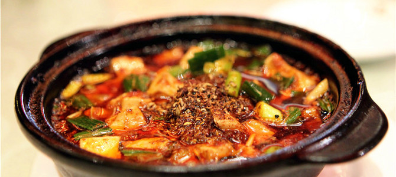
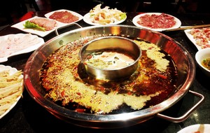
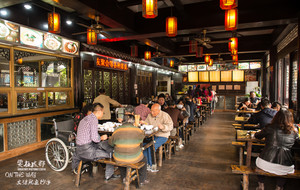
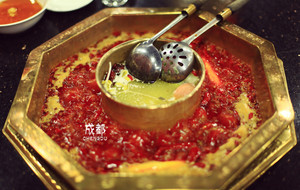

成都人气川菜餐厅推荐
成都小吃种类连老成都人都数不过来，从各色小面到抄手、饺子，从腌卤到凉拌冷食，从锅煎蜜饯到糕点汤元，从蒸煮烘烤到油酥油炸，琳琅满目，各味俱全，种类不下200种。成都的大街小巷，到处都能看到小吃店。麻辣红亮，味美爽口的夫妻肺片、酸辣相宜，臊子香脆的担担面、红味鲜香麻辣，白味汤汁鲜美的钟水饺、历史悠久，用料考究，回味悠长的赖汤圆 、粉条精抖，口味鲜香的复兴肥肠粉，还有张老五川北凉粉、龙抄手；以及遍及大街小巷的卤肉锅魁、宜宾燃面、灯影牛肉、蛋烘糕等等，都是成都特有的地道小吃，而且风味突出，深受本地人以及外来游客的欢迎。
美食推荐

成都最有名的火锅之一，红糖冰粉是必点，有当地人怀念的正宗老味道

文殊院街上知名的传统小吃名店，能吃到各类成都小吃

名气超高的老牌火锅店，离青羊宫很近，经常排长队